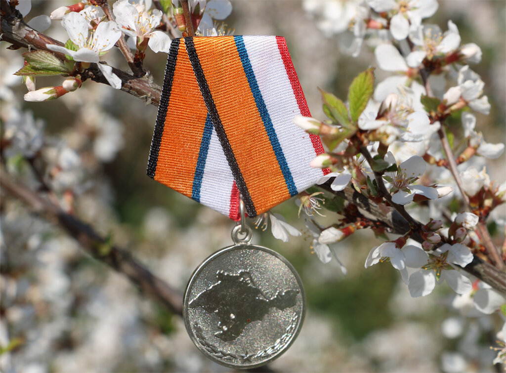
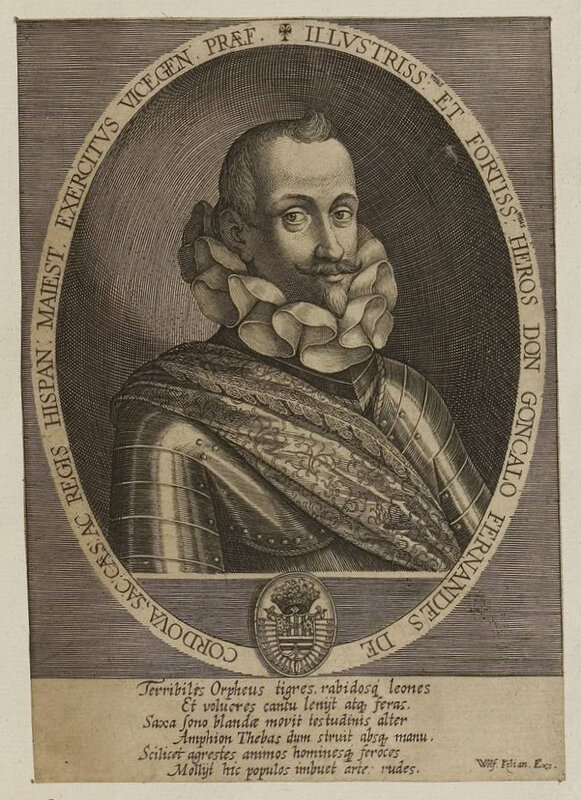

Цена Лепанто
Ни французы, ни англичане в большинстве своем не любят писать о сражении 1571 года при Лепанто. Это в общем-то понятно. Они там не участвовали, а прославлять чужие подвиги этим людям мешает национальная гордыня. Разве что посчитать, во что обошлась триумфаторам при Лепанто их победа, не считается зазорным. Подобно тому, как любят считать некоторые наши соотечественники, во что обошлось нам возвращение Крыма. Для нас в истории запретных тем нет, поэтому мы внимательны как к подвигам прошлых и нынешних поколений на полях сражений, так и к оценкам материальных затрат в ходе этих баталий. О подвигах моряков шестнадцатого века на выходе из Патрасского залива мы подробно писали в предыдущих наших рассказах, о баталиях в Крыму честный рассказ, я думаю, еще будет написан в будущем. Пока же пусть новая медаль, появившаяся на семейном иконостасе, остается молчаливым свидетелем тех событий.

Но вернемся к Лепанто. Дополним приведенные ранее сведения о расходах на кампанию 1571 года данными, взятыми из статьи Дж. Паркера и А.Томпсона в «Маринер’с Миррор» (1978).
Приблизительные прикидки стоимости создания флота Священной лиги делались еще до сражения при Лепанто, на основе цифр, заложенных в учредительных документах Лиги. Так, известный испанский флотоводец того периода герцог Сесса (Gonzalo II Fernández de Córdoba (1520 –1578), 3rd duke of Sessa), находясь на больничной койке, за два месяца до сражения, предпринял подсчет финансовых ресурсов, необходимых для создания флота из 200 галер, 100 «круглых» парусников, 50 000 пехоты и 4500 кавалеристов с приданными артиллеристами, который предусматривался майским соглашением о создании Священной лиги.

Герцог де Сесса
По его расчетам для создания флота и его содержания в течение шестимесячной кампании требовалась сумма в размере 2 700 000 эскудо, что, по закрепленному в соглашении соотношению расходов 3:2 между Испанией и Венецией, требовало от испанской короны вложения 1,6 миллионов эскудо, а от Венецианской республики – 1,1 миллионов эскудо. Цифры выглядят угрожающе, но надо сразу же заявить, что такие суммы потрачены не были.
Во-первых, кампания продолжалась не шесть, а пять с половиной месяцев – с 1 июня по 15 ноября 1571 года. Во-вторых, хотя количество галер было больше запланированного (211 вместо 200, плюс еще шесть галеасов), но парусников участники Лиги выделили всего 49 вместо 100, а общая численность войска составила 40 000, вместо запланированных 54500. В-третьих, контингент папского государства (12 галер и 3000 человек десанта) был оплачен самим папой с некоторой помощью Флоренции. Уже эти изменения снизили долю Испании и Венеции до приблизительно двух миллионов эскудо. Мы можем найти документальное подтверждение доли испанского короля в размере 1 226 241 эскудо в финансовом отчете флота, представленном Филиппу II 14 ноября. Но по общему признанию историков, это был скорее политический, чем финансовый документ, имеющий целью подчеркнуть решающий вклад испанской короны в общие усилия членов Лиги. Цифра эта не учитывала вклада местных властей Неаполя, Милана, Сицилии в поставки для нужд объединенного флота. Однако Венеция не стала оспаривать приведенную цифру и согласилась считать свою долю в размере 800 000 эскудо.
Для Испании размер ее доли даже в сокращенном виде был неподъемным бременем, поэтому естественным выглядело желание Филиппа II переложить расходы на своих сателлитов. Около 1/3 наемного войска, 80% галер и, видимо, 1/3 всех денег поступило из Италии. Большая часть снабжения флота была возложена на итальянских поставщиков. Без весел и снастей из Милана и Неаполя ни одна испанская галера не могла выйти в море. Морские сухари на пункты снабжения флота поступали из Неаполя и с Сицилии. Это особенно важно было в связи с тем, что 1571 год был неурожайным в Испании, а Венеция находилась в глубоком кризисе. 45 галер и две элитных терции Дона Педро и Дона Диего Энрикеса были оплачены за счет средств королевств Неаполя и Сицилии. Кроме того, пять отдельных рот (compañías sueltas) с Сицилии и итальянские полки Сигизмондо Гонзаго из Ломбардии и графа Сарно из Неаполя были, по-видимому также оплачены испанскими доминионами в Италии. Мы помним, конечно, что неаполитанцы сами финансировали создание эскадры из 31 галер из Неаполя и 11 с Сицилии плюс три галеры Стефано де’Мари и Бондинелли. В целом, итальянские государства, находящиеся под контролем Филиппа II, потратили на нужды флота Лиги около 443 000 эскудо, или 36 % общей испанской доли (Неаполь – 22,5 %, Сицилия 10%, Милан – 3,7%).
Но это еще не все поступления в флотскую казну, которые снижали реальную долю Испании в тратах его содержание. Мы помним, что взамен на согласие вступить в Священную лигу папа должен был предоставить испанскому королю так называемые «Три милости» (las Tres Gracias): subsidio, cruzada и excusado. Мы писали об этом подробно в нашем рассказе «Кесарю кесарево». Суммарные сумма поступления в испанскую казну от этих папских милостей превышала миллион эскудо, т.е. заведомо была выше расходов на флот, выпадавших на долю Испании. И хотя не все деньги от этих церковных «милостей» еще поступили в казну, банкиры поспешили выдать под них на льготных условиях кредиты. Из одной только Генуи в мае поступило 400 000 эскудо, которые пошли на нужды формируемого флота.
Таким образом, у испанского короля голова не болела от того, где взять деньги на кампанию 1571 года против турок. Иное дело у Светлейшей. Хотя доля Венеции была меньше – «всего» 800 000 эскудо, но и доходы ее были скромнее. В 1571 году доход республики составил 2 миллиона дукатов (или 1,75 миллиона эскудо), из которых из города Венеции поступило 700 тыс. дукатов, 800 тыс. дукатов – из итальянских владений, и 500 тыс. дукатов из морских колоний Светлейшей. Правда, и венецианцам на помощь пришел папа: в марте 1570 года он разрешил тратить налог, взимаемый на земельную собственность церкви - decimo al clero – на нужды флота республики. Это дало около 50 тыс. дукатов в год, т.е около 6 процентов от расходов Венеции на эти цели. Это немного по сравнению с испанскими расходами папы, так что можно утверждать, что основное бремя расходов за победу при Лепанто легло на Венецию.
Продолжим в следующий раз.